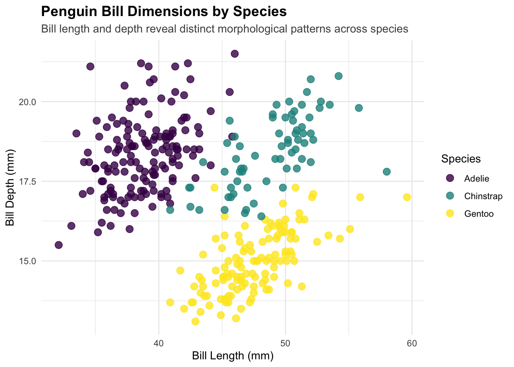
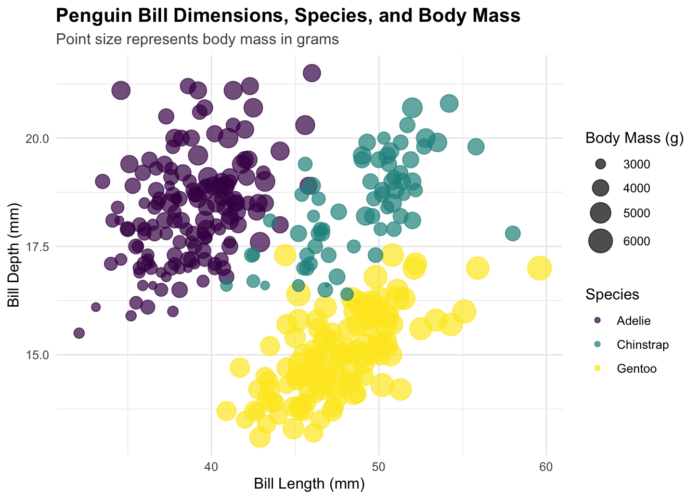
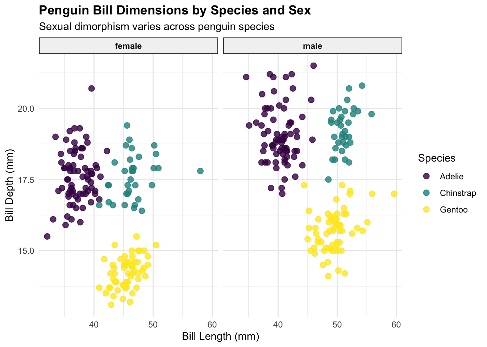
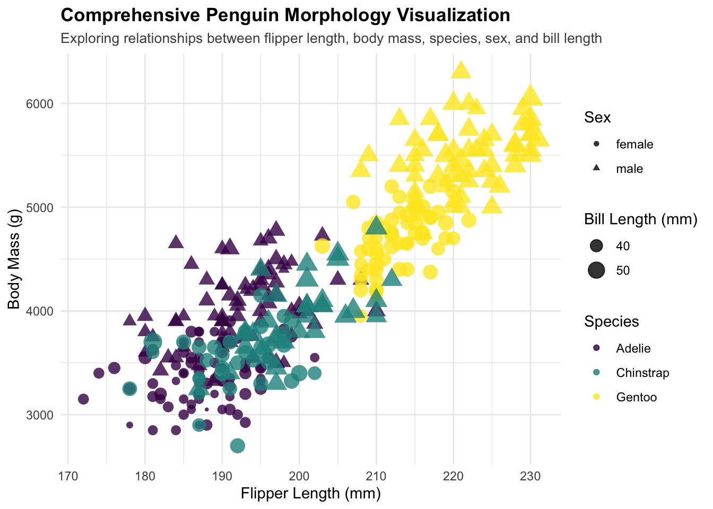
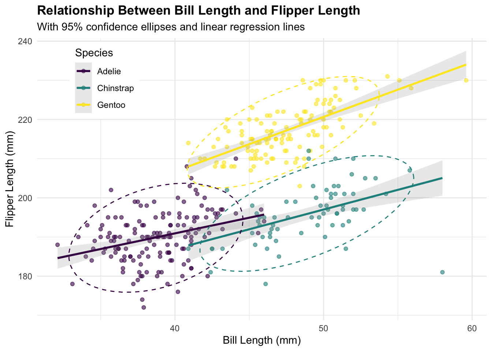

While univariate and bivariate visualizations help us understand individual variables and relationships between pairs of variables, trivariate visualizations allow us to explore complex patterns involving three variables simultaneously. The human visual system can perceive dimensions beyond just the x and y coordinates, enabling us to encode a third variable through various visual elements including color, size, shape, and transparency.
In this document, I’ll demonstrate several approaches to creating effective trivariate visualizations, emphasizing both their technical implementation and design considerations that enhance interpretability.
5 Dataset Exploration
For this demonstration, I’ll use the Palmer Penguins dataset, which contains measurements for three penguin species observed on islands in the Palmer Archipelago, Antarctica.
Code
# Load the datasetdata(penguins)# Examine the structureglimpse(penguins)
species island bill_length_mm bill_depth_mm
Adelie :152 Biscoe :168 Min. :32.10 Min. :13.10
Chinstrap: 68 Dream :124 1st Qu.:39.23 1st Qu.:15.60
Gentoo :124 Torgersen: 52 Median :44.45 Median :17.30
Mean :43.92 Mean :17.15
3rd Qu.:48.50 3rd Qu.:18.70
Max. :59.60 Max. :21.50
NA's :2 NA's :2
flipper_length_mm body_mass_g sex year
Min. :172.0 Min. :2700 female:165 Min. :2007
1st Qu.:190.0 1st Qu.:3550 male :168 1st Qu.:2007
Median :197.0 Median :4050 NA's : 11 Median :2008
Mean :200.9 Mean :4202 Mean :2008
3rd Qu.:213.0 3rd Qu.:4750 3rd Qu.:2009
Max. :231.0 Max. :6300 Max. :2009
NA's :2 NA's :2
The dataset includes several variables that are particularly suitable for trivariate visualization, including:
Numerical measurements: bill length, bill depth, flipper length, and body mass
Categorical variables: species, island, and sex
6 Creating Trivariate Visualizations
6.1 Approach 1: Using Color as the Third Variable
Perhaps the most intuitive way to represent a third variable is through color. This approach works especially well when the third variable is categorical.
Code
# Trivariate plot with color representing speciesggplot(penguins, aes(x = bill_length_mm, y = bill_depth_mm, color = species)) +geom_point(size =3, alpha =0.8) +scale_color_viridis_d() +labs(title ="Penguin Bill Dimensions by Species",subtitle ="Bill length and depth reveal distinct morphological patterns across species",x ="Bill Length (mm)",y ="Bill Depth (mm)",color ="Species" ) +theme_minimal() +theme(plot.title =element_text(face ="bold", size =14),plot.subtitle =element_text(size =11, color ="gray30"),legend.position ="right" )

In this visualization, distinctive clusters emerge for each species. Adelie penguins typically have shorter bills with greater depth, while Chinstrap penguins show longer, narrower bills. Gentoo penguins, meanwhile, have significantly longer bills with moderate depth measurements.
6.2 Approach 2: Adding Size as a Fourth Variable
We can extend our visualization to include a fourth dimension by varying point size according to another numerical variable.
Code
# Adding body mass as a fourth variable through point sizeggplot(penguins, aes(x = bill_length_mm, y = bill_depth_mm, color = species, size = body_mass_g)) +geom_point(alpha =0.7) +scale_color_viridis_d() +scale_size_continuous(range =c(1, 8)) +labs(title ="Penguin Bill Dimensions, Species, and Body Mass",subtitle ="Point size represents body mass in grams",x ="Bill Length (mm)",y ="Bill Depth (mm)",color ="Species",size ="Body Mass (g)" ) +theme_minimal() +theme(plot.title =element_text(face ="bold", size =14),plot.subtitle =element_text(size =11, color ="gray30") )

The size variations reveal an additional pattern: Gentoo penguins not only have distinctive bill shapes but also tend to be significantly larger overall than the other two species.
6.3 Approach 3: Faceting for Multiple Groups
Faceting splits your visualization into multiple panels based on categorical variables, creating a powerful way to compare patterns across groups.
Code
# Faceting by sex to create a multi-panel trivariate visualizationggplot(na.omit(penguins), aes(x = bill_length_mm, y = bill_depth_mm, color = species)) +geom_point(size =2.5, alpha =0.8) +facet_wrap(~sex, ncol =2) +scale_color_viridis_d() +labs(title ="Penguin Bill Dimensions by Species and Sex",subtitle ="Sexual dimorphism varies across penguin species",x ="Bill Length (mm)",y ="Bill Depth (mm)",color ="Species" ) +theme_minimal() +theme(plot.title =element_text(face ="bold"),strip.background =element_rect(fill ="gray95"),strip.text =element_text(face ="bold") )

Faceting by sex reveals subtle but important differences in bill dimensions between male and female penguins within each species. Males generally have larger bills than females, though the degree of sexual dimorphism varies by species.
For even more complex relationships, we can combine multiple aesthetic mappings to create rich, information-dense visualizations.
Code
# Combining multiple aesthetic mappings for a comprehensive viewggplot(na.omit(penguins), aes(x = flipper_length_mm, y = body_mass_g, color = species, shape = sex, size = bill_length_mm)) +geom_point(alpha =0.8) +scale_color_viridis_d() +scale_size_continuous(range =c(1, 6)) +labs(title ="Comprehensive Penguin Morphology Visualization",subtitle ="Exploring relationships between flipper length, body mass, species, sex, and bill length",x ="Flipper Length (mm)",y ="Body Mass (g)",color ="Species",shape ="Sex",size ="Bill Length (mm)" ) +theme_minimal() +theme(legend.position ="right",plot.title =element_text(face ="bold"),plot.subtitle =element_text(size =10, color ="gray30") )

This visualization integrates five different variables: flipper length (x-axis), body mass (y-axis), species (color), sex (shape), and bill length (size). The resulting plot reveals complex interrelationships between these physical characteristics, highlighting how these penguins have evolved different morphological adaptations.
6.5 Approach 5: Using Statistical Transformations
Adding statistical information can enhance the interpretative value of trivariate visualizations.
Code
# Adding statistical layers to enhance interpretationggplot(penguins, aes(x = bill_length_mm, y = flipper_length_mm, color = species)) +geom_point(alpha =0.6) +geom_smooth(method ="lm", se =TRUE, alpha =0.2) +stat_ellipse(level =0.95, linetype =2) +scale_color_viridis_d() +labs(title ="Relationship Between Bill Length and Flipper Length",subtitle ="With 95% confidence ellipses and linear regression lines",x ="Bill Length (mm)",y ="Flipper Length (mm)",color ="Species" ) +theme_minimal() +theme(plot.title =element_text(face ="bold"),legend.position =c(0.15, 0.85),legend.background =element_rect(fill ="white", color =NA) )

The addition of confidence ellipses and linear regression lines provides statistical context, highlighting both the central tendency and variability within each species group. The slopes of the regression lines suggest different scaling relationships between bill length and flipper length across species.
6.6 Approach 6: Annotating Key Points
Strategic annotations can draw attention to important features or outliers in the data.
Code
# Identify interesting points for annotationinteresting_points <- penguins %>%group_by(species) %>%filter(bill_length_mm ==max(bill_length_mm, na.rm =TRUE) | bill_depth_mm ==max(bill_depth_mm, na.rm =TRUE)) %>%distinct(species, .keep_all =TRUE)# Create an annotated visualizationggplot(penguins, aes(x = bill_length_mm, y = bill_depth_mm, color = species)) +geom_point(alpha =0.5) +geom_point(data = interesting_points, size =4, shape =21, fill ="transparent", stroke =1.5) +geom_text_repel(data = interesting_points,aes(label =paste0(species, "\n", island, " Island\n", sex)),box.padding =0.5,point.padding =0.5,force =2,segment.color ="gray50" ) +scale_color_viridis_d() +labs(title ="Penguin Bill Dimensions with Notable Specimens Highlighted",subtitle ="Specimens with extreme bill measurements within each species",x ="Bill Length (mm)",y ="Bill Depth (mm)",color ="Species" ) +theme_minimal() +theme(plot.title =element_text(face ="bold"),legend.position ="bottom" )
The annotations highlight specimens with extreme bill measurements within each species, providing contextual information about their location and sex. This approach is particularly valuable for identifying outliers or boundary cases that define the morphological limits of each species.
7 Design Considerations
When creating trivariate visualizations, several key design principles should guide your decisions:
Visual clarity: Ensure that each variable is distinctly represented using appropriate visual encodings that don’t interfere with one another.
Perceptual effectiveness: Choose visual encodings that match the type of variable being represented. For example:
Position (x and y axes) works best for continuous variables
Color works well for categorical variables with few levels
Size is suitable for continuous variables, but with a more limited perceptual range than position
Accessibility: Consider color blindness and other perceptual differences by using colorblind-friendly palettes (like viridis) and redundant encodings when possible.
Context provision: Include reference lines, statistical summaries, or annotations to help guide interpretation and highlight key patterns.
Explanatory labeling: Use clear titles, axis labels, and legends to ensure viewers understand what each visual element represents.
8 Conclusion
Trivariate visualizations offer powerful ways to explore complex relationships in data that would be impossible to detect using simpler plots. By thoughtfully combining different visual encodings—position, color, size, shape, and faceting—we can create rich, informative graphics that reveal multidimensional patterns while remaining interpretable.
The techniques demonstrated in this document provide a foundation for creating effective trivariate visualizations, but they represent just the beginning of what’s possible. As you develop your visualization skills, experiment with different combinations of these approaches to find the most effective way to communicate your specific data patterns.
9 References
Horst AM, Hill AP, Gorman KB (2020). palmerpenguins: Palmer Archipelago (Antarctica) penguin data. R package version 0.1.0. https://allisonhorst.github.io/palmerpenguins/
Wickham H (2016). ggplot2: Elegant Graphics for Data Analysis. Springer-Verlag New York. ISBN 978-3-319-24277-4, https://ggplot2.tidyverse.org.
Wilke CO (2019). Fundamentals of Data Visualization: A Primer on Making Informative and Compelling Figures. O’Reilly Media. https://clauswilke.com/dataviz/
Source Code
---title: "Trivariate Visualization"author: "Zhijun He"date: todayformat: html: code-fold: true theme: cosmo toc: true number-sections: true---```{r setup, include=FALSE}knitr::opts_chunk$set(echo = TRUE, message = FALSE, warning = FALSE)library(tidyverse)library(palmerpenguins)library(viridis)library(ggrepel)```# Introduction to Trivariate VisualizationWhile univariate and bivariate visualizations help us understand individual variables and relationships between pairs of variables, trivariate visualizations allow us to explore complex patterns involving three variables simultaneously. The human visual system can perceive dimensions beyond just the x and y coordinates, enabling us to encode a third variable through various visual elements including color, size, shape, and transparency.In this document, I'll demonstrate several approaches to creating effective trivariate visualizations, emphasizing both their technical implementation and design considerations that enhance interpretability.# Dataset ExplorationFor this demonstration, I'll use the Palmer Penguins dataset, which contains measurements for three penguin species observed on islands in the Palmer Archipelago, Antarctica.```{r}# Load the datasetdata(penguins)# Examine the structureglimpse(penguins)# Basic summary statisticssummary(penguins)```The dataset includes several variables that are particularly suitable for trivariate visualization, including:- Numerical measurements: bill length, bill depth, flipper length, and body mass- Categorical variables: species, island, and sex# Creating Trivariate Visualizations## Approach 1: Using Color as the Third VariablePerhaps the most intuitive way to represent a third variable is through color. This approach works especially well when the third variable is categorical.```{r color-categorical}# Trivariate plot with color representing speciesggplot(penguins, aes(x = bill_length_mm, y = bill_depth_mm, color = species)) + geom_point(size = 3, alpha = 0.8) + scale_color_viridis_d() + labs( title = "Penguin Bill Dimensions by Species", subtitle = "Bill length and depth reveal distinct morphological patterns across species", x = "Bill Length (mm)", y = "Bill Depth (mm)", color = "Species" ) + theme_minimal() + theme( plot.title = element_text(face = "bold", size = 14), plot.subtitle = element_text(size = 11, color = "gray30"), legend.position = "right" )```In this visualization, distinctive clusters emerge for each species. Adelie penguins typically have shorter bills with greater depth, while Chinstrap penguins show longer, narrower bills. Gentoo penguins, meanwhile, have significantly longer bills with moderate depth measurements.## Approach 2: Adding Size as a Fourth VariableWe can extend our visualization to include a fourth dimension by varying point size according to another numerical variable.```{r size-fourth}# Adding body mass as a fourth variable through point sizeggplot(penguins, aes(x = bill_length_mm, y = bill_depth_mm, color = species, size = body_mass_g)) + geom_point(alpha = 0.7) + scale_color_viridis_d() + scale_size_continuous(range = c(1, 8)) + labs( title = "Penguin Bill Dimensions, Species, and Body Mass", subtitle = "Point size represents body mass in grams", x = "Bill Length (mm)", y = "Bill Depth (mm)", color = "Species", size = "Body Mass (g)" ) + theme_minimal() + theme( plot.title = element_text(face = "bold", size = 14), plot.subtitle = element_text(size = 11, color = "gray30") )```The size variations reveal an additional pattern: Gentoo penguins not only have distinctive bill shapes but also tend to be significantly larger overall than the other two species.## Approach 3: Faceting for Multiple GroupsFaceting splits your visualization into multiple panels based on categorical variables, creating a powerful way to compare patterns across groups.```{r facet-approach}# Faceting by sex to create a multi-panel trivariate visualizationggplot(na.omit(penguins), aes(x = bill_length_mm, y = bill_depth_mm, color = species)) + geom_point(size = 2.5, alpha = 0.8) + facet_wrap(~sex, ncol = 2) + scale_color_viridis_d() + labs( title = "Penguin Bill Dimensions by Species and Sex", subtitle = "Sexual dimorphism varies across penguin species", x = "Bill Length (mm)", y = "Bill Depth (mm)", color = "Species" ) + theme_minimal() + theme( plot.title = element_text(face = "bold"), strip.background = element_rect(fill = "gray95"), strip.text = element_text(face = "bold") )```Faceting by sex reveals subtle but important differences in bill dimensions between male and female penguins within each species. Males generally have larger bills than females, though the degree of sexual dimorphism varies by species.## Approach 4: Combining Multiple Aesthetic MappingsFor even more complex relationships, we can combine multiple aesthetic mappings to create rich, information-dense visualizations.```{r combined-aesthetics}# Combining multiple aesthetic mappings for a comprehensive viewggplot(na.omit(penguins), aes(x = flipper_length_mm, y = body_mass_g, color = species, shape = sex, size = bill_length_mm)) + geom_point(alpha = 0.8) + scale_color_viridis_d() + scale_size_continuous(range = c(1, 6)) + labs( title = "Comprehensive Penguin Morphology Visualization", subtitle = "Exploring relationships between flipper length, body mass, species, sex, and bill length", x = "Flipper Length (mm)", y = "Body Mass (g)", color = "Species", shape = "Sex", size = "Bill Length (mm)" ) + theme_minimal() + theme( legend.position = "right", plot.title = element_text(face = "bold"), plot.subtitle = element_text(size = 10, color = "gray30") )```This visualization integrates five different variables: flipper length (x-axis), body mass (y-axis), species (color), sex (shape), and bill length (size). The resulting plot reveals complex interrelationships between these physical characteristics, highlighting how these penguins have evolved different morphological adaptations.## Approach 5: Using Statistical TransformationsAdding statistical information can enhance the interpretative value of trivariate visualizations.```{r statistical-layers}# Adding statistical layers to enhance interpretationggplot(penguins, aes(x = bill_length_mm, y = flipper_length_mm, color = species)) + geom_point(alpha = 0.6) + geom_smooth(method = "lm", se = TRUE, alpha = 0.2) + stat_ellipse(level = 0.95, linetype = 2) + scale_color_viridis_d() + labs( title = "Relationship Between Bill Length and Flipper Length", subtitle = "With 95% confidence ellipses and linear regression lines", x = "Bill Length (mm)", y = "Flipper Length (mm)", color = "Species" ) + theme_minimal() + theme( plot.title = element_text(face = "bold"), legend.position = c(0.15, 0.85), legend.background = element_rect(fill = "white", color = NA) )```The addition of confidence ellipses and linear regression lines provides statistical context, highlighting both the central tendency and variability within each species group. The slopes of the regression lines suggest different scaling relationships between bill length and flipper length across species.## Approach 6: Annotating Key PointsStrategic annotations can draw attention to important features or outliers in the data.```{r annotations}# Identify interesting points for annotationinteresting_points <- penguins %>% group_by(species) %>% filter(bill_length_mm == max(bill_length_mm, na.rm = TRUE) | bill_depth_mm == max(bill_depth_mm, na.rm = TRUE)) %>% distinct(species, .keep_all = TRUE)# Create an annotated visualizationggplot(penguins, aes(x = bill_length_mm, y = bill_depth_mm, color = species)) + geom_point(alpha = 0.5) + geom_point(data = interesting_points, size = 4, shape = 21, fill = "transparent", stroke = 1.5) + geom_text_repel( data = interesting_points, aes(label = paste0(species, "\n", island, " Island\n", sex)), box.padding = 0.5, point.padding = 0.5, force = 2, segment.color = "gray50" ) + scale_color_viridis_d() + labs( title = "Penguin Bill Dimensions with Notable Specimens Highlighted", subtitle = "Specimens with extreme bill measurements within each species", x = "Bill Length (mm)", y = "Bill Depth (mm)", color = "Species" ) + theme_minimal() + theme( plot.title = element_text(face = "bold"), legend.position = "bottom" )```The annotations highlight specimens with extreme bill measurements within each species, providing contextual information about their location and sex. This approach is particularly valuable for identifying outliers or boundary cases that define the morphological limits of each species.# Design ConsiderationsWhen creating trivariate visualizations, several key design principles should guide your decisions:1. **Visual clarity**: Ensure that each variable is distinctly represented using appropriate visual encodings that don't interfere with one another.2. **Perceptual effectiveness**: Choose visual encodings that match the type of variable being represented. For example: - Position (x and y axes) works best for continuous variables - Color works well for categorical variables with few levels - Size is suitable for continuous variables, but with a more limited perceptual range than position3. **Accessibility**: Consider color blindness and other perceptual differences by using colorblind-friendly palettes (like viridis) and redundant encodings when possible.4. **Context provision**: Include reference lines, statistical summaries, or annotations to help guide interpretation and highlight key patterns.5. **Explanatory labeling**: Use clear titles, axis labels, and legends to ensure viewers understand what each visual element represents.# ConclusionTrivariate visualizations offer powerful ways to explore complex relationships in data that would be impossible to detect using simpler plots. By thoughtfully combining different visual encodings—position, color, size, shape, and faceting—we can create rich, informative graphics that reveal multidimensional patterns while remaining interpretable.The techniques demonstrated in this document provide a foundation for creating effective trivariate visualizations, but they represent just the beginning of what's possible. As you develop your visualization skills, experiment with different combinations of these approaches to find the most effective way to communicate your specific data patterns.# ReferencesHorst AM, Hill AP, Gorman KB (2020). palmerpenguins: Palmer Archipelago (Antarctica) penguin data. R package version 0.1.0. https://allisonhorst.github.io/palmerpenguins/Wickham H (2016). ggplot2: Elegant Graphics for Data Analysis. Springer-Verlag New York. ISBN 978-3-319-24277-4, https://ggplot2.tidyverse.org.Wilke CO (2019). Fundamentals of Data Visualization: A Primer on Making Informative and Compelling Figures. O'Reilly Media. https://clauswilke.com/dataviz/